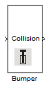

Bumper

Robotino's bumper consists of collision detection sensors. Values can be read from these sensors to determine if a collision has taken place or not.
Contents
Block properties
Inputs
- ComId
Outputs
- Collision - is set to true (1) if the bumper detects a collision, false (0) otherwise